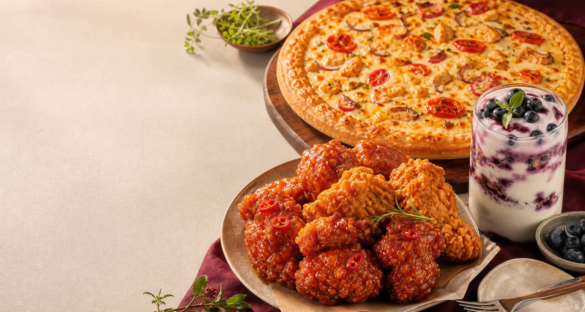

🍗CRISPY
& HONEST
& HONEST
CHICKEN
DONE
RIGHT.
JADAM & MARU FOOD FAMILY
바삭한 치킨부터 갓 구운 피자, 산뜻한 요거트까지.
모두의 취향이 만나는 가장 즐거운 식탁을 준비했습니다.

ONE TABLE, THREE STORIES
자담&마루는 목포대학교 가까이에서 자담치킨·피자마루·요거트퍼플을 한 매장에 연결합니다.
가격과 맛을 모두 놓치지 않는 한 끼, 다양한 국적의 구성원이 함께 만드는 열린 식탁을 지향합니다.
OUR BRANDS
각자의 개성은 선명하게,
좋은 맛을 향한 마음은 하나로.
CHICKEN
DONE
RIGHT.
OUR PROMISE
매일 먹는 음식이기에 원재료부터 꼼꼼히 살핍니다.
과장보다 기본에 충실한 레시피로 맛을 지킵니다.
가맹점과 고객, 지역사회가 함께 웃는 내일을 만듭니다.
TASTE & NEWS
바삭하고, 쫄깃하고, 상큼한 여름의 맛을 만나보세요.
OFFICIAL PARTNERS
브랜드·메뉴·창업에 관한 최신 정보는
각 공식 본사 채널에서 확인하세요.
㈜웰빙푸드
경기도 고양시 덕양구 화중로 72
케이탑리츠빌딩 10층
㈜푸드죤
서울특별시 강서구 화곡로 277
4~6층
에이앤디(AND)
서울특별시 강남구 선릉로 704
12층 1293-3호
본사 정보는 2026년 7월 각 브랜드 공식 홈페이지 기준으로 확인했습니다.
BETTER TOGETHER